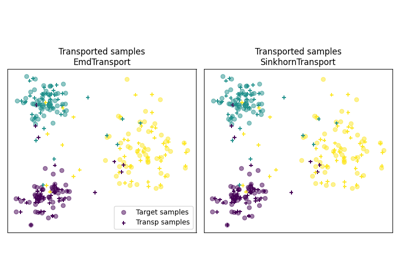

Domain adaptation examples


OT with Laplacian regularization for domain adaptation
OT with Laplacian regularization for domain adaptation


OT for image color adaptation with mapping estimation
OT for image color adaptation with mapping estimation

OTDA unsupervised vs semi-supervised setting
OTDA unsupervised vs semi-supervised setting


OT for domain adaptation on empirical distributions
OT for domain adaptation on empirical distributions